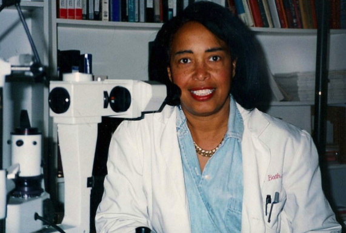

Biography
Dr. Patricia Bath, an ophthalmologist and laser scientist, she has done so much for the research of the human eye. It all started when she was a child, she heard about Dr. Albert Schweitzer work in the Congo with lepers. She excelled in high school and college. At 16 she got an award for scientific research. Bath earned her medical degree from Howard University College of medicine. She interned at Harlem Hospital for a year and in the following year she completed her medical training at New York University for the next 3 years. She became the first African American resident in ophthalmology. Bath married a Benny Primm and had a daughter named Eraka. Patricia Bath's main accomplishment was the invention of the Laserphaco Probe.
